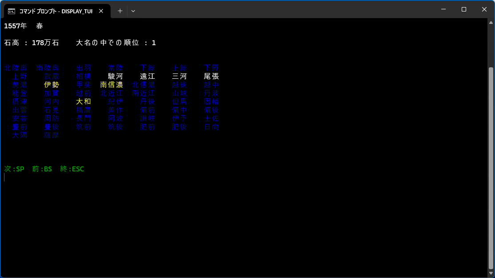

PC用ゲーム「天下統一」関係 2026年1月14日更新
古いバージョンほど面白い「天下統一」シリーズはすべてWindows
11で動作させることができる。互換モードを使ったり、インストーラーが16bitの場合には
http://toastytech.com/files/setup.html
を替わりに使ったり、画面拡大ソフトを利用したり、ヘルプファイルが開くように設定したりと工夫が必要なことはあるが・・・。また、インストール後インストールフォルダを移動させても動作する（SSBの除く）のでプログラムやデータを容易にバックアップできる。
昔 www.imasy.or.jp で公開していたコンテンツ
にいくつかユーティリティーを掲載していたが、その後若干修正したり追加したものがあるのでここに掲載する。コンパイラーも今は入手が難しいDelphi
5/6からフリーソフトのLazarus+Free Pscal（32bit）に移植した。使用したコンパイラーは必ずしも最新版ではないが、単純な書き方をしてあるので他のバージョンも使えると思う。なお、古いプログラムは 天下統一
Web Page が転載している。
ダウンロード（詳細は同梱のReadMe.txtを参照）。

話は変わるが、
「天下統一 相剋の果て バリューパック」の改造版「天下統一
Ruler of East」と
「天下統一 ADVANCE」の改造版「天下統一 ADVANCED
CUSTOM」とが
「やっぱり「天下統一」を捨てられない」
というサイトに紹介されている。ところがあいにく改造用ファイルはリンク切れ。同サイトによると再配布フリーとのことなのででここに転載しておく。